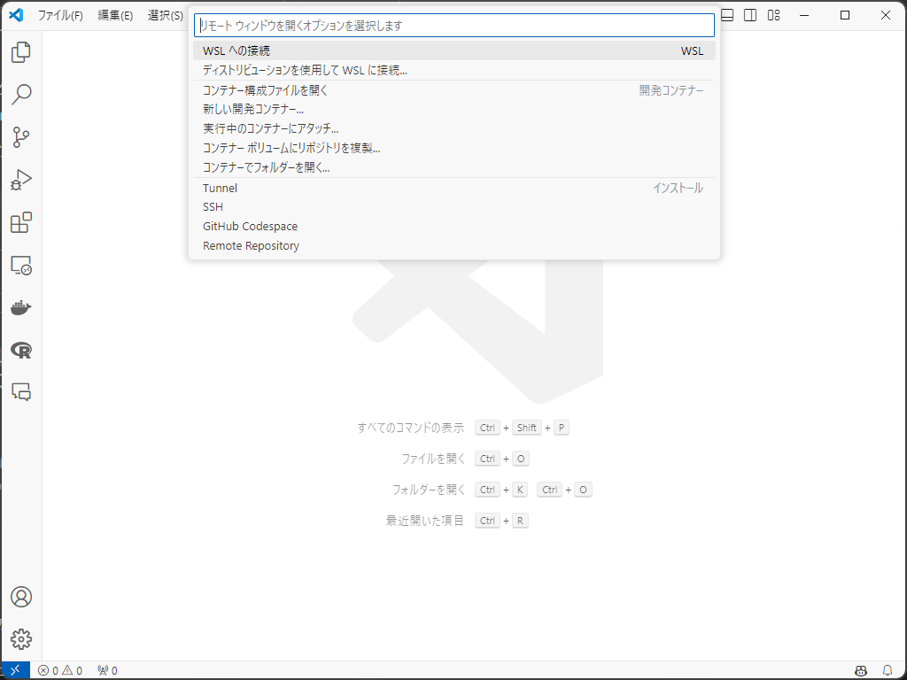
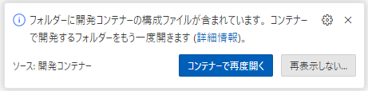

はじめに
以前の記事で、Docker & VSCode を用いた R 環境の構築方法をご紹介しました。
今回は同じく Docker & VSCode で使える Python の環境テンプレートを作成しましたので、そちらをご紹介します。
以前の R 環境でも Python は使えましたが、特に R や Julia 等が不要である方は、ぜひ参考にしてみてください。
WSL2, Ubuntu, Homebrew, VSCode, Docker, Git, GitHub を使用されたことがあり、上の記事を読んでいただいた方は開発環境の構築まで飛んでいただいて大丈夫だと思います。
事前準備
1から手順を説明していきますが、既に Docker や Ubuntu 等をインストールしている場合は適宜飛ばしてください。
WSL2（Windows ユーザーのみ）
アプリ一覧から PowerShell または Windows コマンドプロンプトを管理者権限で開く
- 右クリックで管理者権限を使えます。

以下のコマンドを入力して実行
- これでインストールはできるはずですが、詳しくはこちらのサイトを参照してください。
PowerShell
wsl --installユーザー名とパスワードを設定
インストールが終わると、Linux ディストリビューションのユーザー名とパスワードの作成を求められます1。
ユーザー名は何でも大丈夫です。パスワードもめちゃくちゃ簡単で問題ありません。
パスワードは画面上には表示されませんが、ちゃんと入力されています。慌てて何回も入力しないようにしてください。
エクスプローラーから Linux に入り、\Ubuntu\home\ユーザー名 がメインとなるディレクトリです。
Homebrew（Mac ユーザーのみ）
Mac ユーザーは Homebrew を使って諸々インストールしていくので、まだの方はここでインストールしてください。
ターミナルを開く
- アプリ一覧から「ターミナル」を探してください。
以下のコマンドを入力して実行
- パスワードを求められるので、入力してください。
Terminal
/bin/bash -c "$(curl -fsSL https://raw.githubusercontent.com/Homebrew/install/HEAD/install.sh)"VSCode
VSCode のダウンロードサイトからダウンロード、インストール
Download for Windows2 をクリックしてダウンロードできます。
インストールができたら、VSCode を開いてください。
（任意）日本語の拡張機能をインストール
画面左側に拡張機能のアイコン
 があります。ここの検索ボックスに
があります。ここの検索ボックスに japaneseと入力し、1番上に出てきたものをインストールします。インストール後、VSCode を再起動すれば日本語が反映されていると思います。

拡張機能のインストール
拡張機能の検索ボックスで、次の ID を入力し、インストールします。
ms-vscode-remote.remote-containers(Dev Containers)ms-vscode-remote.remote-wsl(WSL, Windows ユーザーのみ)
WSL に接続（Windows ユーザーのみ）
VSCode から先ほどインストールした WSL に接続します。
画面左下の
><アイコンをクリックして、「WSL への接続」をクリックします。

Docker
Docker をインストールします。
Windows の方はここから Docker Desktop for Windows を、Mac の方はこちらからダウンロード＆インストール
設定の確認（Windows のみ）
インストール出来たら、画面上部の設定ボタンから Resources、WSL integration と進み、チェックボックスにチェック、Ubuntu がオンになっていることを確認してください。
たまに、何もしていないのにここがオフになっていて、トラブることがあります。
詳しくはこちらをご覧ください。日本語で書いてあります。

画面左側の Volumes に進み、Create からボリュームを作成
pipという名前で作成します。R の開発コンテナを作成したことがある方で、もし
pipを作成 & 使用している場合、名前を変える必要があります。以前紹介した R 環境の中にある Python とはバージョンが異なるので、同じボリュームを使うとエラーが出る可能性があります。
Git
Windows
Ubuntu で git をインストール
- Windows のアプリ一覧から Ubuntu を探し、開いてください。開いたら、以下のコマンドを入力して実行します。
Ubuntu
sudo apt-get install git
設定
- 以下のコマンドを入力、実行します。ユーザー名は何でも大丈夫です。
Ubuntu
git config --global user.name [任意のユーザ名]
git config --global user.email [任意のメールアドレス]Mac
Homebrew で git をインストール
- ターミナルを開いて、以下のコマンドを入力して実行します。
Terminal
brew install git
設定
以下のコマンドを入力、実行します。ユーザー名は何でも大丈夫です。
ここに限らずですが、
[]ごと置き換えてくださいね。
Terminal
git config --global user.name [任意のユーザ名]
git config --global user.email [任意のメールアドレス]GitHub アカウントの作成
ファイルは基本的に GitHub で管理するので、ここからアカウントを作成してください。
ポイント
GitHub アカウントを作成したら、VSCode にログインしておきましょう。
VSCode を開く
画面左下のアイコンをクリック
- GitHub でサインインを行う
GitHub にログインすることで、その後の作業がスムーズに進みます。
事前準備は以上です！
開発環境の構築
1人でプロジェクトを進めると仮定して説明します。
共同プロジェクトの場合は、こちらの記事を参考にして進めてみて下さい。
GitHub リポジトリを作成
テンプレートの GitHub リポジトリ にアクセス
画面右の「Use this template」から「Create a new repository」を選択
Repository name を記入
Private を選択
- 通常のプロジェクトなら Private で OK
「Create repository」をクリック
リポジトリをクローン
VSCode を開く
画面左側のアイコンから「ソース管理」3を開く
「リポジトリの複製」を選択し、さらに「GitHub から複製」を選ぶ
リポジトリを選択し、クローン
リポジトリは、「ユーザー名/リポジトリ名」の形式で表示されます。
クローンしたリポジトリを開くか問われるので、開いてください。
画面右下に「コンテナーで再度開く」と出たらクリック
出ない場合、画面左下「WSL: Ubuntu」4をクリックし、「コンテナーで再度開く」を選択してください。
初めて環境を構築する場合、ここでかなり時間がかかるので辛抱強く待ちましょう。

エクスプローラーを開き、\\wsl.localhost\Ubuntu\home\ユーザー名 を確認してみてください。リポジトリ名と同じフォルダができていると思います。
Mac の場合は、ユーザー名の下にできているはずです。
Python の設定
この環境では、pip を使用してパッケージをインストールし、requirements.txt でパッケージを管理します。
DVC のインストール
まず初めに、データを管理するための dvc をインストールしてみます。
Google ドライブを使用してデータを管理するので、ドライブ上の任意の場所にデータを保存するためのフォルダを作っておいてください。
VSCode を開く
画面上「ターミナル」から「新しいターミナル」を開く
以下のコマンドを入力して実行
Terminal
pip install dvc dvc-gdrive次のコマンドを入力しておく
- 最後の四角括弧で囲まれた部分を置き換えるので、まだ実行しないでください！
Terminal
dvc init && dvc remote add -d myremote gdrive://[Google DriveのフォルダID]Google ドライブで作成したフォルダの ID をコピー
- ID は、ドライブでフォルダを開いたときの URL で、最後のスラッシュ（~/folders/）より右側の部分です。
[Google DriveのフォルダID]を置き換えて実行
以上で DVC の設定ができました。
次に、今使った DVC パッケージを記録しておきましょう5。
以下のコマンドを実行してください。
Terminal
pip freeze > requirements.txtこれで requirements.txt というファイルが生成され、その中にインストールしたパッケージの情報が保存されます。
新たなパッケージをインストールしたら、適宜実行して保存していってください。
パッケージは Docker にキャッシュされるので、1度インストールしてしまえば、別のプロジェクトではインストールしなくても使えます。
これはこのテンプレートの設定を使っていればの話なので、ローカルの Python であれば話は変わりますが…。
違う PC など、環境を作成した環境とは異なる環境で作業に移るときは、リポジトリをクローンした後、以下のコマンドで必要なパッケージをインストールできます。
Terminal
pip install -r requirements.txt作業の流れについては後ほど詳述します。
データの管理
データは今インストールした DVC で管理します。データは Google ドライブ上で保管されます。
ワーキングディレクトリに、
dataというフォルダを作成データが入ったら、以下のコードを実行
dataフォルダごとドライブに追加します。dataフォルダは.gitignoreに記載されているため、GitHub にはアップロードされません。
Terminal
dvc add data/データは、Windows のエクスプローラーや Mac の Finder から直接フォルダに入れて大丈夫です（通常の Windows や Mac での作業のように）。
データをプッシュした後に Google ドライブを見てもらえれば分かりますが、よくわからない形で保存されています。DVC の仕組みがそのような保存形式になっているからなので、決してファイルが破損しているわけではありません。
ちなみに Windows ユーザーの方で、一回ローカルに落としてから Linux にデータ等を入れたら Zone.Identifier というファイルができることがありますが、これは無視して大丈夫です。邪魔であればまとめて消してください。
データをアップロード
- 以下のコードでデータをプッシュします。
Terminal
dvc push最初は add と push をする過程でアカウントの認証が必要になりますが、表示に従って認証を進めてください6。
データのダウンロード
- パッケージと同様、別環境でデータをダウンロードするためには以下のコードを実行して下さい。
Terminal
dvc pullこれでデータが管理できます。
作業終了時
一連の作業を終えたら、GitHub にコミット、プッシュしましょう。
作業内容をコミット
プッシュ
「ソース管理」の右側にある「…」をクリックし、「プッシュ」を選択してください。
これで、作業内容が GitHub にアップロードされます。
プッシュをするのは最後で良いと思います。例えば作業を3つのファイルで行ったとしたら、それぞれのファイルでコミットメッセージを書いてコミットし、最後にプッシュすれば OK です。
毎度毎度プッシュを行うより効率的ですね。
作業の流れ
少し流れがごちゃごちゃしてしまったので整理します。
作業手順
事前準備を行う
リポジトリのクローン
VSCode 内で行います。
クローン出来たら、「コンテナーで再度開く」をクリックし開発コンテナに移動します。
DVC の設定をする（データを使わない場合は5にスキップ）
pip install dvc dvc-gdrivedvc init && dvc remote add -d myremote gdrive://[Google DriveのフォルダID]
データの保存
ワーキングディレクトリに
dataフォルダを作成します。data内にデータを追加していきます。一通りデータを追加したら、
dvc add data/を実行します。
作業をする
パッケージを記録
pip freeze > requirements.txtパッケージを追加したら適宜実行して下さい。
パッケージごとに逐一実行する必要はありません。最後にまとめて、で大丈夫です。
git にコミット＆プッシュ
- VSCode 上でデータをコミット、プッシュします。
データをプッシュする
dvc pushこれを実行することでドライブにデータが送られます。
別の環境で再現する
環境を変えた場合は、次の流れで環境を再現します。
事前準備
リポジトリのクローン
- 開発コンテナに入ります。
ターミナルで以下を実行
- Python のパッケージがインストールされ、データもダウンロードされます。
Terminal
pip install -r requirements.txt
dvc pullあとは上の流れと同じです。
おわりに
私自身はあまり Python に詳しくないのですが、少々使う機会があったので、これを機にと思いまとめてみました。
より効率的な環境構築方法があると思いますので、勉強し次第更新しようと思います。
間違いや書き漏れ、よりよい構築案がありましたらコメントいただけると幸いです。
追記
2024/06/24：Docker のボリュームに関する説明を変更